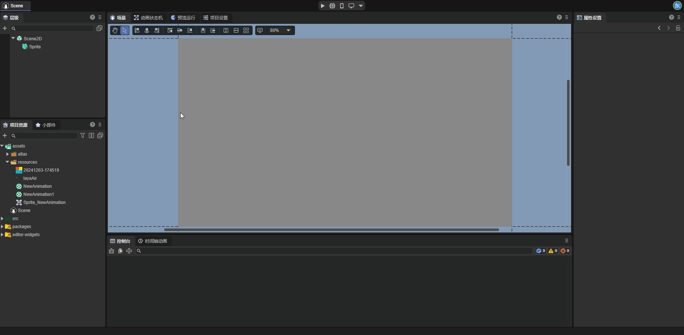
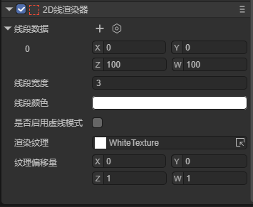
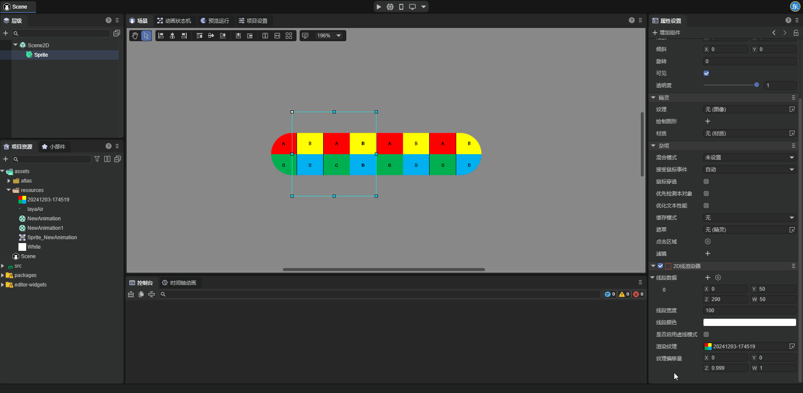
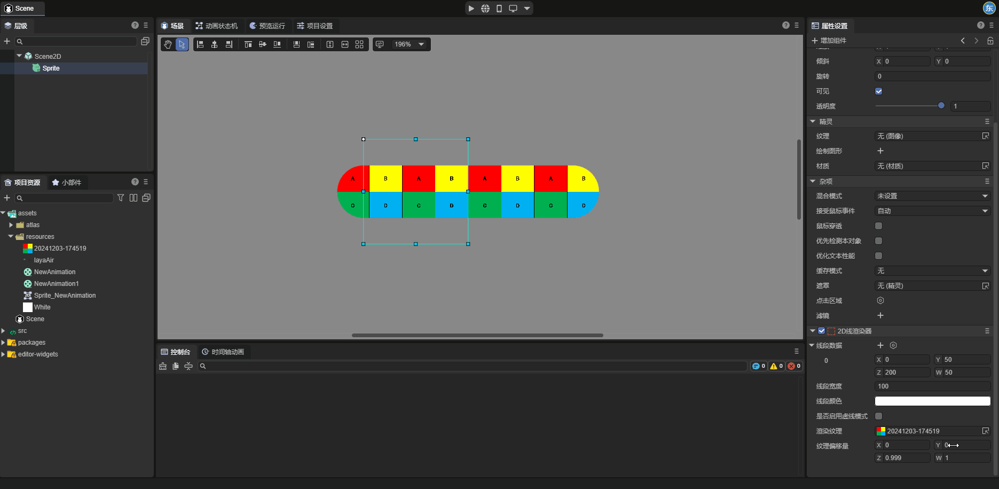
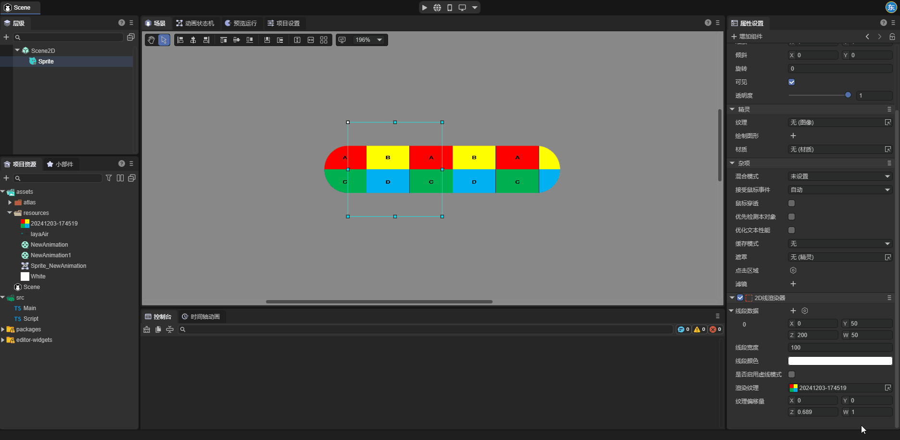
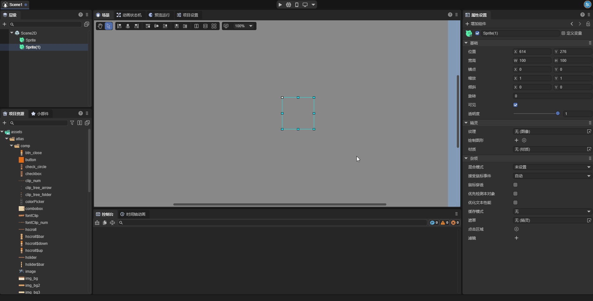

2D像素线
一、概述
尽管LayaAir引擎提供了绘制图形（Graphics）API用于绘制线段和折线，然而LayaAir3.3开始，提供了更为高级的2D线渲染器(Line2DRender)，不仅具有Graphics的画线能力，还支持创建虚线，以及为线段设置材质和纹理，使得2D线也可以接收光照，拥有更加炫酷的线形状效果，例如绳索、渐变线、线段边框、线上的动态纹理等等。
注：基于性能考虑，Graphics可以实现的情况下，建议优先使用Graphics画线。

（图1-1）
如图1-1所示，我们在场景中通过线渲染器创建了绳索、渐变线、图像边框。下面开始介绍如何在IDE中创建和使用线渲染器。
二、IDE中创建与使用
2.1添加2D线渲染器组件
选中一个2D节点，在属性设置面板中为节点增加一个2D线渲染器组件(Line2DRender)。

（图2-1-1）
组件添加到节点上后，默认会创建好一个线段。
2.2属性设置
如图2-2-1所示，2D线渲染器上有以下这些属性：

（图2-2-1）
| 属性 | 功能 |
|---|---|
| 线段数据(Positions) | 每一组数据代表2D节点上的一条线段，其中 X,Y 值为线段的起点，Z,W 值为线段的终点。 |
| 线段宽度(LineWidth) | 线段的宽度，以像素为单位；线段的宽度不会随着节点的缩放而变化。 |
| 线段颜色(Color) | 线段的颜色，与渲染纹理和材质共同决定线段最终的显示效果。 |
| 是否启用虚线模式(EnableDashedModle) | 启用此属性后，线段会变为虚线。 |
| 虚线长度(DashedLength) | 启用虚线模式后可以设置的属性，此属性决定了虚线每一个循环的长度。 |
| 虚线间隔的百分比(DashedPercent) | 一个归一化的值，决定了虚线中非空白区域占线段长度的百分比。 |
| 虚线偏移量(DashedOffset) | 虚线上每个循环整体向左或向右的移动距离。 |
| 渲染纹理(Texture) | 应用于线段的纹理，此属性后续会详细讲解 |
| 纹理偏移量(TillOffset) | 代表线段上纹理的偏移值与缩放值，其中 X,Y 为纹理的偏移值；Z，W 为纹理的缩放值。 |
2.3线段的渲染纹理
2D线渲染器可以为线段设置渲染纹理(Texture)，用于实现渐变线等效果。开发者可在IDE中设置线段的纹理。
这里我们为了便于观察，将线段宽度设置为了100。

（图2-3-1）
设置好的纹理会循环的显示在线段上，开发者可自行设置纹理偏移量(TillOffset)，纹理偏移量中的X，Y值用于控制纹理的偏移，Z,W值用于控制纹理的缩放。这里我们通过四个例子直观的感受纹理偏移量的用法。
当我们改变纹理偏移量的X属性值时，如图2-3-2所示，纹理沿线段的方向平移：

（图2-3-2）
当我们改变纹理偏移量的Y属性值时，如图2-3-3所示，纹理垂直于线段的方向平移：

（图2-3-3）
当我们改变纹理偏移量的Z属性值时，如图2-3-4所示，可以发现纹理沿线段方向缩放：

（图2-3-4）
当我们改变纹理偏移量的W属性值时，如图2-3-5所示，可以发现纹理沿垂直于线段的方向缩放：

（图2-3-5）
2.4对比2D线渲染器和Graphics绘制线段
LayaAir引擎中还有另一个可以用于绘制线段的工具Graphics。

这里我们对比一下两者的区别。
一是创建虚线。对于2D线渲染器，开发者在启用是否启用虚线模式属性后，线段就会变成虚线，而Graphics绘制线段无法绘制虚线。
二是渲染纹理。2D线渲染器可以设置渲染纹理用于实现各种效果（例如渐变线，绳子等），Graphics绘制线段无法设置渲染纹理。
三是属性的作用对象不同。2D线渲染器设置的属性会作用于渲染器中的所有线段，而Graphics绘制线段中的每一条线段都有独立的属性值。
三、在代码中使用2D线渲染器组件
在游戏开发的过程中，开发者也可以通过脚本代码动态的创建线渲染器组件，以及创建任意图形线段。示例代码如下所示：
示例代码:
const { regClass} = Laya;
@regClass()
/**
* 基于2D线渲染器的画线示例脚本
* 注意：脚本的事件是基于节点的宽高，所以绘制的图形也是在宽高范围内。
*/
export class DrawLine extends Laya.Script {
declare owner: Laya.Sprite;
line2DRender: Laya.Line2DRender;
lastMousePos: number[] = [];
isDrawing: boolean = false; // 标记是否正在绘制
// 组件被激活后执行，此时所有节点和组件均已创建完毕，此方法只执行一次
onEnable(): void {
// 添加2D线渲染器组件
this.line2DRender = this.owner.addComponent(Laya.Line2DRender);
// 设置线的宽度
this.line2DRender.lineWidth = 5;
}
// 鼠标按下时开始绘制
onMouseDown(evt: Laya.Event): void {
this.isDrawing = true;
// 记录起始点
this.lastMousePos[0] = evt.stageX - this.owner.x;
this.lastMousePos[1] = evt.stageY - this.owner.y;
}
// 鼠标松开时停止绘制
onMouseUp(): void {
this.isDrawing = false;
this.lastMousePos.length = 0; // 清空上一次的点
}
// 鼠标移动时绘制线段（仅在按下时）
onMouseMove(evt: Laya.Event): void {
if (!this.isDrawing || this.lastMousePos.length === 0) return;
const x = evt.stageX - this.owner.x;
const y = evt.stageY - this.owner.y;
// 添加线段
this.line2DRender.addPoint(this.lastMousePos[0], this.lastMousePos[1], x, y);
// 更新最后一个点的坐标
this.lastMousePos[0] = x;
this.lastMousePos[1] = y;
}
}
将以上代码保存后，拖到场景中的精灵节点上，运行即可，效果如图：

（图3-1）